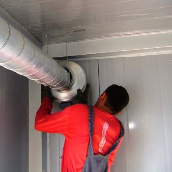
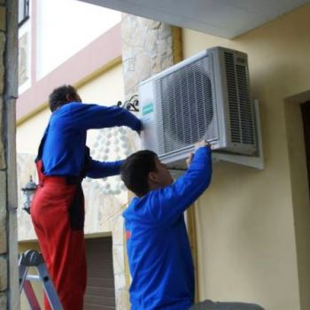
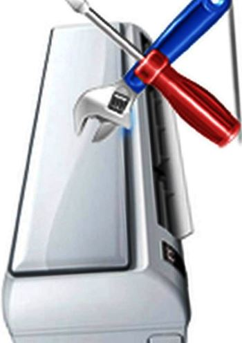

Электрик, недорого и качественно.
Телефон - 8 904 642 08 57. Николай.

Мастер кондиционеров.
Цены ниже! Скидки! Позвоните!
Квалифицированный мастер, выполняет на профессиональном уровне все виды и этапы обслуживания данной современной техники. Независимо от каких-либо конкретных затруднений в диагностике поломки или сложности расходной детали для него.
На практическом примере не встретить человека, который не пользовался бы кондиционеров со всеми вытекающими для использования функциями (обогрева помещения в межсезонье, охлаждения, проветривания). И это, правильно ведь когда человек платит деньги - он непременно должен получать все самое лучшее, эргономичное и инновационное.
Сейчас наша команда бригады мастеров, предлагает на высококвалифицированном уровне произвести следующие виды работ, которые касаются гармоничного кондиционирования помещения и даже здания.
Сколько стоит услуги мастера кондиционеров?
|
Заправка. |
1500 руб. |
|
Мелкий ремонт |
1700 руб. |
|
Диагностика. |
1200 руб. |
|
Монтаж под ключ. |
5500 руб. |
Почему именно я?
В первую очередь, в случае каких-либо выявленных неполадок, владелец такой современной техники, сразу, же, обратит внимание. А именно, кондиционер может не реагировать на указанные команды с пульта дистанционного управления, выпустить жидкость, издавать неприятные запахи и многое другое. Неполадок может быть вполне очень много, поэтому мастера вызвать частного мастера по обслуживанию и ремонту кондиционеров в Москве и ее области, просто-напросто, необходимо.
Гарантия 100%
Во вторую очередь, достоверная диагностика неполадки данной техники гарантирует 100% экономию денежных средств, а также доступность ремонта, независимо от конкретной серьезности поломки. То есть, наш мастер, это так называемый гарант, истинного профессионального и добросовестного подхода к делу.
И этот факт, мы с уверенностью подтверждаем, тем, что за многолетний опыт работы в данной сфере деятельности, не наблюдались весомые летальные исходы. Так как, опыт может прийти с годами, соответствующими знаниями и навыками обращения с техникой представленного агрегата.
Обслуживание недорого.
В третью, очередь, абсолютно каждая модель требует регулярного сезонного обслуживания, так как, между зимой и летом присутствует достаточно длительный перерыв. А это значит, что наш мастер по кондиционерам, готов выехать на ваш объект в максимально кратчайшие сроки.
Правильная диагностика.
В четвертую очередь, ремонт кондиционера никогда в жизни не будет эффективен, если будет не правильно произведена диагностика неполадки, вновь не заправлен соответствующим веществом, и самое главное цель мастера будет максимально завысить стоимость ремонта кондиционера.
В нашем случае, достоверность предоставленной информации по техническому состоянию кондиционера и добросовестность выполнения всех этапов работ, позволила частному мастеру, настоящему профессионалу по обслуживанию и ремонту кондиционеров ведущих мировых производителей наработать великолепную и зарекомендовавшую себя с положительной стороны репутацию.
И, наконец-то, в пятую очередь, цена ремонта кондиционера, при помощи частного мастера - это не только, выгодно, а также доступно по своей ценовой категории, но и, конечно, же, гарантия долговечности беспрерывного использования, ценные рекомендации, которые сопутствуют надежности и проверенному качеству и прочее.
Опытный мастер.
Хочется напомнить, что частный мастер - это самый оптимальный вариант решения первостепенной задачи. Просто потому, что мы умеем и не боимся нести ответственность за проделанную работу, так как, знаем все тонкости данного специализированного производства. Только мастер из частной бригады, посоветует, как наиболее дешево произвести обслуживание и ремонт неотъемлемого агрегата, кондиционера.
Вы еще сомневаетесь в квалификации?
Тогда, просто необходимо обратиться к нам за помощью, где каждый поймет, что выбрал абсолютно верный адрес в СПБ, без всяких там дополнительных колебаний, поэтому резко возникшему вопросу.




Сколько будут стоить материалы.
Расценки на электропроводку.
Электромонтаж в доме.
Замена электропроводки в двухкомнатной квартире?.
Сколько стоит сделать внутреннюю проводку?.
Установка люстр и светильников.
Электромонтаж проводов в бане.